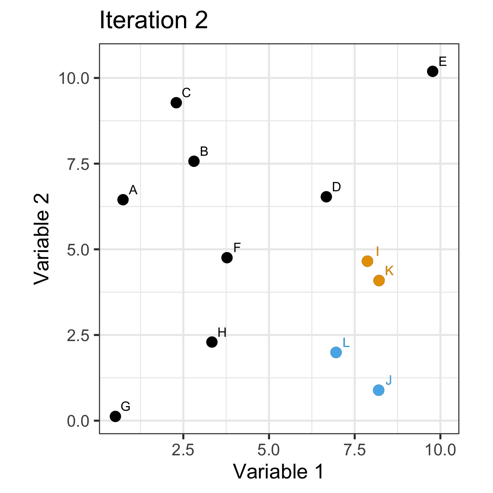
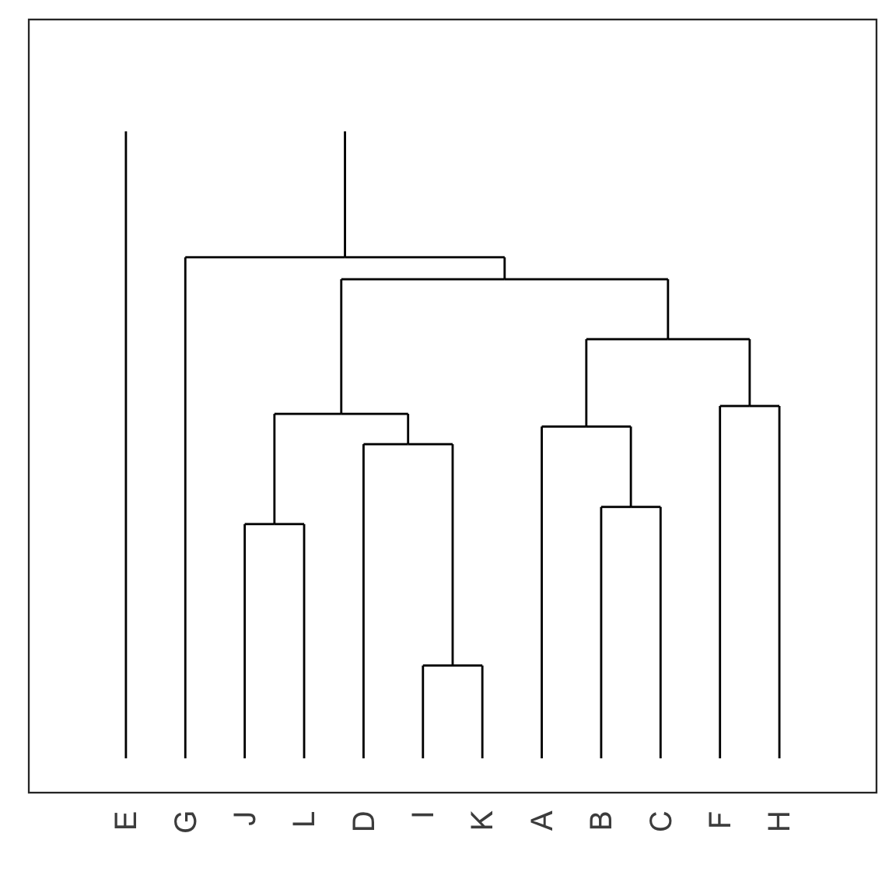
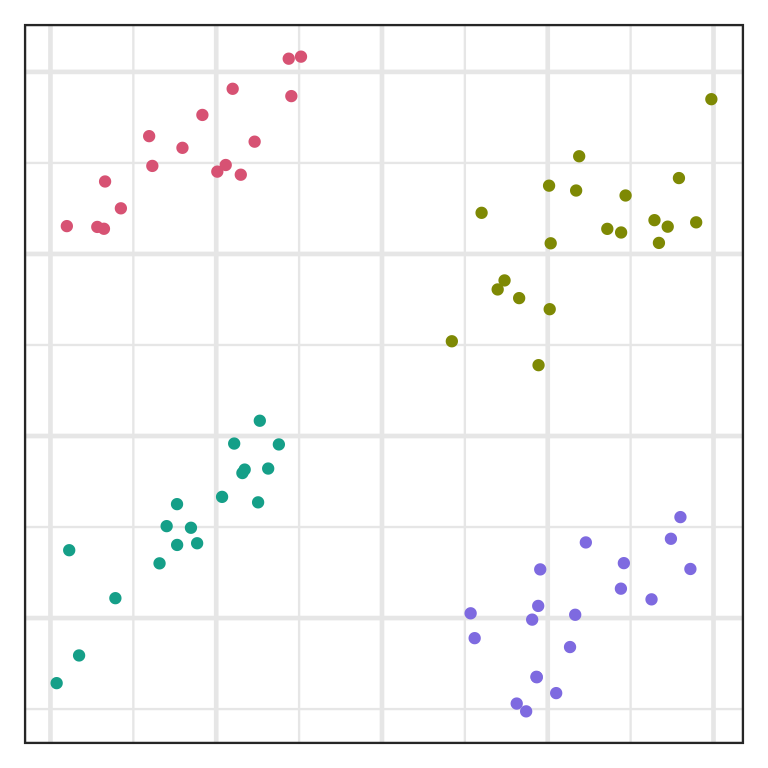

ETC3250/5250
Introduction to Machine Learning
Clustering
Lecturer: Emi Tanaka
Department of Econometrics and Business Statistics
Cluster analysis
- So far we have been working with cases where we have a response of interest (labelled data).
- In some instances, we only have a set of variables but no response of interest (unlabelled data).
- But we may be interested in finding an unobserved grouping within this unlabelled data, e.g. customer segmentation in marketing analysis.
- This is an example of unsupervised learning.
How many clusters do you see?
A possible clustering
- Here we cluster the observations into 3 groups… but how?
Approaches to clustering
- Hierarchical:
- Agglomerative: One to all.
- Divisive: All to one.
- Non-hierarchical:
- Select the number of clusters.
- Then assign observations to clusters.
- We’ll use k-means clustering to show this.
Hierarchical clustering
Distance
- For clustering, we are grouping observations that are similar.
- Recall from Lecture 7, we covered some distance metrics.
- For clustering, we need two notions of distance:
- Distance between observations
- Distance between clusters
- Let’s denote \mathcal{A} and \mathcal{B} as the two sets that contain the observation indexes of the two clusters, e.g. \mathcal{A} = \{1, 4\} and \mathcal{B} = \{2, 3, 5\} denotes that observations 1 and 4 are in the first cluster and observations 2, 3 and 5 are in the second cluster.
Hierarchical clustering
- Agglomerative: Start with all observations in singleton clusters. Merge clusters sequentially until all are in one cluster.
- The functions
hclust()oragnes()can be used for this. - Divisive: Start with all observtions in one cluster, and sequentially divide until all observations are in singleton clusters.
- The function
diana()can be used for this.
Agglomeration method
- There are several ways to merge clusters:
- Single linkage: D(\mathcal{A}, \mathcal{B}) = \min_{i\in\mathcal{A},j\in\mathcal{B}}D(\boldsymbol{x}_i,\boldsymbol{x}_j)
- Complete linkage: D(\mathcal{A}, \mathcal{B}) = \max_{i\in\mathcal{A},j\in\mathcal{B}}D(\boldsymbol{x}_i,\boldsymbol{x}_j)
- Average linkage: D(\mathcal{A}, \mathcal{B}) = \frac{1}{|\mathcal{A}||\mathcal{B}|}\sum_{i\in\mathcal{A}}\sum_{j\in\mathcal{B}}D(\boldsymbol{x}_i,\boldsymbol{x}_j)
- Centroid linkage: D(\mathcal{A}, \mathcal{B}) = D(\bar{\boldsymbol{x}}_\mathcal{A},\bar{\boldsymbol{x}}_\mathcal{B}), combining based on distance between the centroid location of the each cluster
- Ward’s method: minimises the total within-cluster variance by merging clusters with minimum between-cluster distance.
Toy data
- Suppose we have this data with four groups shown below.
Single linkage
D(\mathcal{A}, \mathcal{B}) = \min_{i\in\mathcal{A},j\in\mathcal{B}}D(\boldsymbol{x}_i,\boldsymbol{x}_j)
- Here we have 4 groups and 6 distances (based on ED) between clusters.
Complete linkage
D(\mathcal{A}, \mathcal{B}) = \max_{i\in\mathcal{A},j\in\mathcal{B}}D(\boldsymbol{x}_i,\boldsymbol{x}_j)
Average linkage
D(\mathcal{A}, \mathcal{B}) = \frac{1}{|\mathcal{A}||\mathcal{B}|}\sum_{i\in\mathcal{A}}\sum_{j\in\mathcal{B}}D(\boldsymbol{x}_i,\boldsymbol{x}_j)
Centroid linkage
D(\mathcal{A}, \mathcal{B}) = D(\bar{\boldsymbol{x}}_\mathcal{A},\bar{\boldsymbol{x}}_\mathcal{B})
Ward’s method
Minimises the total within-cluster sum of squares: W = \sum_{k = 1}^g \left(\sum_{i\in\mathcal{A}_k}\sum_{j=1}^p\left(x_{ij} - \bar{x}_{\cdot j}\right)^2\right) where:
- \bar{x}_{\cdot j} = \frac{1}{|\mathcal{A}_k|}\sum_{i\in\mathcal{A}_k}x_{ij},
- \mathcal{A}_k is a set of indexes for the k-th group,
- g is the number of cluster groups.
Single linkage demo: iteration 0
- Every observation starts as a singleton cluster.
Single linkage demo: iteration 1
Single linkage demo: iteration 2

Single linkage demo: iteration 3
Single linkage demo: iteration 4
Single linkage demo: iteration 5
Single linkage demo: iteration 6
Single linkage demo: iteration 7
Single linkage demo: iteration 8
Single linkage demo: iteration 9
Single linkage demo: iteration 10

Single linkage demo: iteration 11
Dendrogram
- Each leaf of the dendrogram represents one observation.
- Leaves fuse into branches and branches fuse, either with leaves or other branches.
- Fusions lower in the tree mean the groups of observations are more similar to each other.
Cutting the tree
- Cut the tree at a particular height results in a particular set of clusters.
- For example, cutting the tree at the dashed red line below results in 4 clusters: (E), (G), (J, L, D, I K) and (A, B, C, F, H).
Chaining
- Single linkage often suffers from chaining, i.e. a single observation results in merging two clusters.
- This results in clusters that are spread out and not compact.

Inlier and outlier
- An inlier is an erroneous observation that lies within the interior of a distribution.

- An outlier is an observation that lies well outside the typical range of values.
Robustness
- Methods that are not often affected by single observations are referred to be robust.
- Single linkage is easily affected by inliers.
- Complete linkage less affected by inliers but affected by outliers.
- Other methods like average linkage, centroid linkage and Ward’s method are more robust.
Hierarchical clustering with R
Yale face database
Code
Sys.setenv(VROOM_CONNECTION_SIZE = 5000000)
yalefaces <- read_csv("https://emitanaka.org/iml/data/yalefaces.csv")
imagedata_to_plotdata <- function(data = yalefaces,
w = 320,
h = 243,
which = sample(1:165, 15)) {
data %>%
mutate(id = 1:n()) %>%
filter(id %in% which) %>%
pivot_longer(starts_with("V")) %>%
mutate(col = rep(rep(1:w, each = h), n_distinct(id)),
row = rep(rep(1:h, times = w), n_distinct(id)))
}
gfaces <- imagedata_to_plotdata(yalefaces) %>%
ggplot(aes(col, row)) +
geom_tile(aes(fill = value)) +
facet_wrap(~subject + type, nrow = 3) +
scale_y_reverse() +
theme_void(base_size = 18) +
guides(fill = "none") +
coord_equal()
gfacesPrinciple components as features
- Applying hierarchical clustering with various methods:
hsingle <- hclust(dist(yalefaces_pca$x), method = "single")
hcomplete <- hclust(dist(yalefaces_pca$x), method = "complete")
haverage <- hclust(dist(yalefaces_pca$x), method = "average")
hcentroid <- hclust(dist(yalefaces_pca$x), method = "centroid")
hward <- hclust(dist(yalefaces_pca$x), method = "ward.D2")
# add labels
hsingle$labels <- paste("Subject", yalefaces$subject, yalefaces$type)
hcomplete$labels <- paste("Subject", yalefaces$subject, yalefaces$type)
haverage$labels <- paste("Subject", yalefaces$subject, yalefaces$type)
hcentroid$labels <- paste("Subject", yalefaces$subject, yalefaces$type)
hward$labels <- paste("Subject", yalefaces$subject, yalefaces$type)Dendrogram with R
scroll
Cutting the tree with R
Subject 1 centerlight Subject 1 glasses Subject 1 happy
1 1 1
Subject 1 leftlight Subject 1 noglasses Subject 1 normal
2 3 1
Subject 1 rightlight Subject 1 sad Subject 1 sleepy
4 1 1
Subject 1 surprised Subject 1 wink Subject 2 centerlight
1 1 3
Subject 2 glasses Subject 2 happy Subject 2 leftlight
3 3 2
Subject 2 noglasses Subject 2 normal Subject 2 rightlight
3 3 5
Subject 2 sad Subject 2 sleepy Subject 2 surprised
3 3 3
Subject 2 wink Subject 3 centerlight Subject 3 glasses
3 6 6
Subject 3 happy Subject 3 leftlight Subject 3 noglasses
7 8 7
Subject 3 normal Subject 3 rightlight Subject 3 sad
7 4 7
Subject 3 sleepy Subject 3 surprised Subject 3 wink
7 7 7
Subject 4 centerlight Subject 4 glasses Subject 4 happy
5 5 5
Subject 4 leftlight Subject 4 noglasses Subject 4 normal
2 5 5
Subject 4 rightlight Subject 4 sad Subject 4 sleepy
4 5 5
Subject 4 surprised Subject 4 wink Subject 5 centerlight
5 5 9
Subject 5 glasses Subject 5 happy Subject 5 leftlight
9 9 2
Subject 5 noglasses Subject 5 normal Subject 5 rightlight
9 9 4
Subject 5 sad Subject 5 sleepy Subject 5 surprised
9 9 9
Subject 5 wink Subject 6 centerlight Subject 6 glasses
9 10 11
Subject 6 happy Subject 6 leftlight Subject 6 noglasses
11 8 11
Subject 6 normal Subject 6 rightlight Subject 6 sad
11 10 11
Subject 6 sleepy Subject 6 surprised Subject 6 wink
11 11 11
Subject 7 centerlight Subject 7 glasses Subject 7 happy
6 7 6
Subject 7 leftlight Subject 7 noglasses Subject 7 normal
8 7 7
Subject 7 rightlight Subject 7 sad Subject 7 sleepy
4 7 7
Subject 7 surprised Subject 7 wink Subject 8 centerlight
7 7 7
Subject 8 glasses Subject 8 happy Subject 8 leftlight
7 7 8
Subject 8 noglasses Subject 8 normal Subject 8 rightlight
7 7 4
Subject 8 sad Subject 8 sleepy Subject 8 surprised
6 7 6
Subject 8 wink Subject 9 centerlight Subject 9 glasses
6 6 6
Subject 9 happy Subject 9 leftlight Subject 9 noglasses
12 2 12
Subject 9 normal Subject 9 rightlight Subject 9 sad
12 4 12
Subject 9 sleepy Subject 9 surprised Subject 9 wink
12 12 12
Subject 10 centerlight Subject 10 glasses Subject 10 happy
1 6 13
Subject 10 leftlight Subject 10 noglasses Subject 10 normal
2 13 13
Subject 10 rightlight Subject 10 sad Subject 10 sleepy
5 13 13
Subject 10 surprised Subject 10 wink Subject 11 centerlight
13 13 14
Subject 11 glasses Subject 11 happy Subject 11 leftlight
14 14 8
Subject 11 noglasses Subject 11 normal Subject 11 rightlight
14 14 14
Subject 11 sad Subject 11 sleepy Subject 11 surprised
14 14 14
Subject 11 wink Subject 12 centerlight Subject 12 glasses
14 3 3
Subject 12 happy Subject 12 leftlight Subject 12 noglasses
9 2 2
Subject 12 normal Subject 12 rightlight Subject 12 sad
2 3 9
Subject 12 sleepy Subject 12 surprised Subject 12 wink
9 9 9
Subject 13 centerlight Subject 13 glasses Subject 13 happy
6 15 15
Subject 13 leftlight Subject 13 noglasses Subject 13 normal
8 15 15
Subject 13 rightlight Subject 13 sad Subject 13 sleepy
4 15 15
Subject 13 surprised Subject 13 wink Subject 14 centerlight
15 15 10
Subject 14 glasses Subject 14 happy Subject 14 leftlight
10 10 8
Subject 14 noglasses Subject 14 normal Subject 14 rightlight
10 10 10
Subject 14 sad Subject 14 sleepy Subject 14 surprised
10 10 10
Subject 14 wink Subject 15 centerlight Subject 15 glasses
10 7 13
Subject 15 happy Subject 15 leftlight Subject 15 noglasses
6 8 13
Subject 15 normal Subject 15 rightlight Subject 15 sad
7 4 6
Subject 15 sleepy Subject 15 surprised Subject 15 wink
13 13 6 cward
1 2 3 4 5 6 7 8 9 10 11 12 13 14 15
9 9 13 9 11 14 22 8 14 12 8 7 11 10 8 Clustering results
scroll
Remember for the following we never used subject id variable in the clustering.
Cluster 1 is mostly subject 1!
- Cluster 2 seems to be capturing mostly the left light.

- Cluster 3 is mostly subject 2.
- Cluster 4 is mostly right light.
- Cluster 5 is mostly subject 4
- Cluster 6 is a mix
- Cluster 7 contains mostly subject 3, 7 and 8
- Cluster 8 is the left light
- Cluster 9 is subjects 5 and 12
- Cluster 10 is mostly subject 14
- Cluster 11 is subject 6
- Cluster 12 is subject 9
- Cluster 13 is subjects 10 and 15
- Cluster 14 is subject 11
- Cluster 15 is subject 13
k-means clustering
k-means clustering algorithm
- The number of clusters, k, must be decided apriori to using this method.
- In k-means clustering, each observation must be closest to the centroid (or mean) of its own cluster.
- This method is iterative and follows along the lines of:
- Initially start with k partitions of data or k seed points.
- Assign observations to the cluster with the closest mean.
- Recompute centroids of each cluster.
- Repeat steps 2-3 until convergence.
k-means demo: iteration 0
- Select k = 2 with initial seed points (2.5, 6) and (7.5, 7).
k-means demo: iteration 1
- Assign observations to the closest seed point.
k-means demo: iteration 2
- Recompute the centroids.
k-means demo: iteration 3
- Assign observations to the closest centroid.
k-means clustering in R
kout <- kmeans(yalefaces_pca$x, centers = 15) # `scale` the data if different measurement units
str(kout)List of 9
$ cluster : int [1:165] 12 12 12 8 4 12 11 12 12 12 ...
$ centers : num [1:15, 1:165] -6146 16755 -14911 -9669 22233 ...
..- attr(*, "dimnames")=List of 2
.. ..$ : chr [1:15] "1" "2" "3" "4" ...
.. ..$ : chr [1:165] "PC1" "PC2" "PC3" "PC4" ...
$ totss : num 5.63e+10
$ withinss : num [1:15] 8.93e+08 8.32e+08 5.04e+08 1.35e+09 5.06e+08 ...
$ tot.withinss: num 1.56e+10
$ betweenss : num 4.07e+10
$ size : int [1:15] 14 6 5 14 8 10 11 12 14 11 ...
$ iter : int 3
$ ifault : int 0
- attr(*, "class")= chr "kmeans"clustercontains the cluster number of the observation
Randomness in k-means clustering
- The k-means algorithm can yield quite different results depending on the initial seed.
k-means clustering caveats
- Unlike hierarchical clustering, the result for different number of clusters can contradict each other!
kout3 <- kmeans(yalefaces_pca$x, centers = 3)
kout5 <- kmeans(yalefaces_pca$x, centers = 5)
table(kout3$cluster, kout5$cluster)
1 2 3 4 5
1 0 47 14 0 5
2 15 0 0 0 55
3 0 0 0 29 0hout3 <- cutree(hclust(dist(yalefaces_pca$x)), 3)
hout5 <- cutree(hclust(dist(yalefaces_pca$x)), 5)
table(hout3, hout5) hout5
hout3 1 2 3 4 5
1 76 0 0 43 0
2 0 17 0 0 0
3 0 0 9 0 20- k-means:
- 1\rightarrow 2, 3, 5
- 2\rightarrow 1, 5
- 3\rightarrow 4
- hierarchical:
- 1\rightarrow 1, 4
- 2\rightarrow 2
- 3\rightarrow 3, 5
Label switching
- Cluster labels can be switched around.
- Cluster 1 can be equivalent to Cluster 2 in another iteration – the number doesn’t matter.
koutA <- kmeans(yalefaces_pca$x, centers = 5)
koutB <- kmeans(yalefaces_pca$x, centers = 5)
table(koutA$cluster, koutB$cluster)
1 2 3 4 5
1 16 53 0 0 0
2 6 0 0 44 0
3 0 0 0 0 18
4 0 0 0 0 11
5 0 0 17 0 0- Here Cluster 5 in A is Cluster 3 in B.
Takeaways
- Clustering is an unsupervised learning.
- There are many methods for clustering.
- Clustering helps to explore data.
- The choice of the number of clusters largely depends on the context of the problem – too many clusters may not be helpful but neither is too few.

ETC3250/5250 Week 9